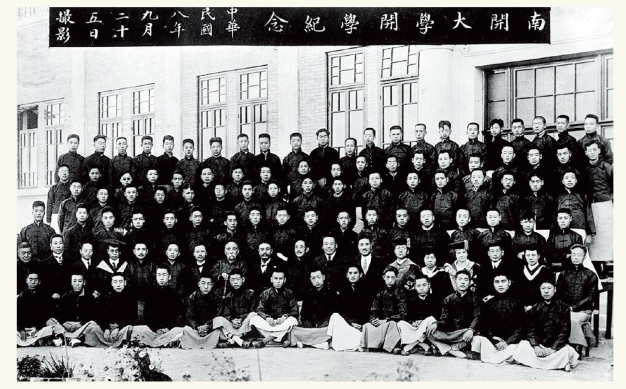
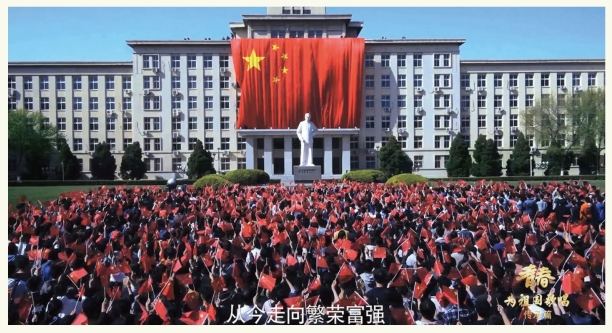

通关后设计 · 三方案原型
全部 14 处地标修复完成后，游戏需要一个收束。三个方案分别是：单页归档仪式、可漫游的记忆长廊、以及两者叠加的三幕收束。点开切换查看，聘书可导出为 PNG。
终章 · 百年之后
记忆，已全部归位
一册散佚于战火、迁校与年代流转之间的校史影像，今天重新合上。




荷宝
十四处地标、三帧影像，你已经把它们从散佚里一处一处找回。这份档案，现在归你保管。
仪式约 60 秒：幕布拉开 → 三帧影像依次显影 → 荷宝致辞 → 授予聘书。减少动态效果模式下直接呈现完成态，跳过按钮在 3 秒后可用。
档案馆 · 记忆长廊
十四座展柜，全部开放
通关后解锁第四张地图。地标变成展柜沿廊排布，修复员可在走道上自由行走，点开展柜看当年的答题记录与校史讲解。
长廊走道 · 修复员可自由行走，镜头跟随
老校钟
入口放在封面与地图页头；未通关时按钮显示“完成全部修复后开放”。展柜数据需要把答题记录写入本地存储，目前答题历史只在内存中。
推荐方案 · 三层收束
仪式给情绪，长廊给去处，空展台给延续
幕一 · 归档仪式
三照合璧、荷宝致辞、授予聘书。一次性播放，约 60 秒，可跳过。
P0 · 约 1 天幕二 · 记忆长廊
14 座展柜常驻，可回看、可重玩单关，荷宝做讲解员。
P1 · 约 2 天幕三 · 未完待续
长廊尽头的空展台列出影像待补地标，邀请提供老照片线索。
P2 · 约半天南开大学档案馆 · 记忆修复任务
修复员聘书
兹有 同学，沿校园地标核验档案，走过三个年代，修复 14 处地标，寻回 3 帧校史影像。特聘为南开记忆修复员。
编号 NK-2026-0417
签发 2026 年 10 月 12 日
签发 2026 年 10 月 12 日
南开
档案
档案
本证书为演示原型，校史事实与影像版权以南开大学档案馆复核为准。
总用时42 分钟
答对38 / 44
求助线索5 次
最长连对9 题
最顺的一处：思源堂，三题全对未查线索。
卡得最久：木斋图书馆，用了 2 次线索。